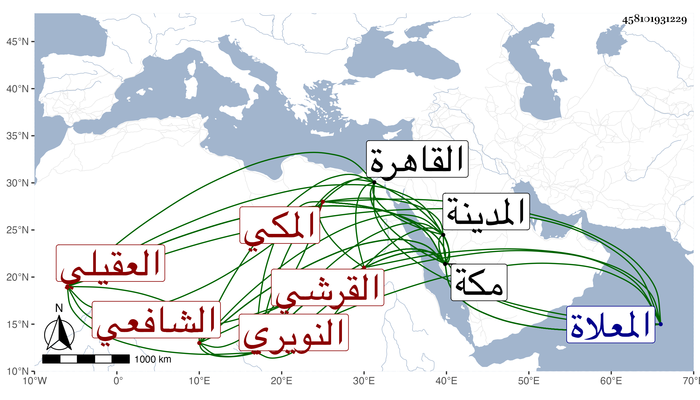

0902Sakhawi.DawLamic.ITO20230111-ara1.EIS1600.458101931229
Biography ID: 458101931229
405
عمر بن محمد بن محمد بن علي بن أحمد بن عبد العزيز السراج بن الأمين أبي اليمن بن الجمال القرشي العقيلي النويري المكي الشافعي شقيق أبي بكر الآتي أخو قاضي المالكية النور علي الماضي ويعرف بابن أبي اليمن ، وأمه أم كلثوم ابنة القاضي أبي عبد الله محمد بن علي النويري . ولد في جمادى الأولى سنة خمسين وثمانمائة بمكة ونشأ بها فحفظ القرآن والعمدة والمنهاج الفرعي والأصلي وألفية ابن مالك والشاطبية وغيرها وعرض على جماعة واشتغل في الفقه وأصوله والعربية والحديث والمنطق وغيرها ومن شيوخه بمكة النور ابن عطيف وعبد المحسن الشرواني والشمسان الجوجري والمسيري وعبد الحق السنباطي وأبو العزم القدسي والشهاب ابن يونس ويحيى العلمي وحمزة المغربي ، ثم قدم القاهرة فأخذ عن الجوجري أيضا ولازمني بها وكذا بمكة في مجاورتي الثانية والثالثة وكتبت له إجازة حسنة وأجاز له في سنة مولده فما بعدها والده وأعمامه أبو البركات وكمالية وأم الوفا وأبو الفضل وخديجة ابنا عبد الرحمن النويري وشيخنا والعيني وابن الديري والرشيدي والصالحي وابن الفرات وسارة ابنة ابن جماعة والسيف عفيف الدين الأيجي والمحب المطري والبدر عبد الله بن فرحون والشهاب المحلي وأبو جعفر بن العجمي والضيا بن النصيبي والجمال بن جماعة والتقي أبو بكر القلقشندي وست القضاة ابنة ابن زريق وأحمد بن عبد الرحمن بن سليمان بن حمزة وأحمد بن عمر بن عبد الهادي والشهاب بن زيد وعبد الرحمن بن خليل القابوني ومحمد بن محمد بن جوارش ، وزار المدينة وأكثر من التلاوة والطواف والصيام والبر بأهله ، وكان حاد اللسان مع مزيد تودد للغرباء . مات فجأة شهيدا في يوم الخميس منتصف ذي القعدة سنة سبع وثمانين بمكة سقط من شباك ببيته فأخذه السيل وذهب به لبركة ماجن ثم جيء به وقد جرد اللصوص أثوابه فغسل من الغد وصلي عليه في طائفة قليلة جعل نعشه فوق شاذروان الحجر لتعذر وضعه عند باب الكعبة وغيره من المسجد ، ودفن عند قبورهم من المعلاة وتأسف عليه كثيرون رحمه الله وعوضه الجنة .
